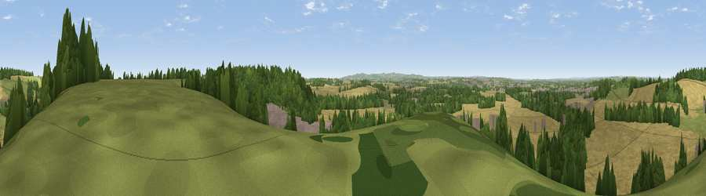

Viewpoint near Gotham
#23643 in England · top 27% of its area beats it · near Gotham · access?Where it is
The exact computed spot (SK 52125 29025). Click the marker for map links.
Public access: no public right of way or access land is recorded at this exact spot — it may be on private land. Computed from Natural England's CRoW access layer and OpenStreetMap rights of way — not the legal definitive map. Always verify locally.
The view, rendered

A 360° render of this exact spot computed from the terrain model, tree cover and land cover — summer colours, afternoon light, calibrated against photographs of famous viewpoints. Real trees, hedges and buildings will differ in detail.
The panorama
Grey silhouette: terrain skyline in each direction (720 bearings, Earth curvature and refraction included). Dashed green: skyline with trees (+15 m) and buildings (+8 m) as obstacles. Blue strip: how far the ground is visible on each bearing.
Where the view opens
Wedge length = distance to the farthest visible ground on that bearing (vegetation-aware). Rings at 10, 25 and 50 km.
What fills the view
56% cropland · 25% woodland · 13% grassland · 6% built-up
Angular shares of the visible panorama (visual magnitude), not map area. Landscape diversity 0.49 (0–1 Shannon).
Key numbers
More beautiful places nearby
The staircase of upgrades: each row has a higher view potential than everything closer. Driving times are estimates from straight-line distance, calibrated against real road routing — check an actual route before setting out.
| Place | Direction | Drive | Score |
|---|---|---|---|
| Viewpoint near West Leake | SSE · 1 km | ~2 min | 48.1 |
| Viewpoint near Thrumpton | N · 1 km | ~4 min | 48.5 |
| Viewpoint near Gotham | NNE · 2 km | ~6 min | 54.0 |
| Viewpoint near Stanton by Dale | NNW · 10 km | ~19 min | 56.5 |
| Viewpoint near Risley | NW · 10 km | ~20 min | 57.7 |
| No Man's Lane | NW · 10 km | ~20 min | 65.8 |
| Ives Head | SSW · 13 km | ~24 min | 73.3 |
| Viewpoint near Woodhouse Eaves | S · 14 km | ~26 min | 77.7 |
52.85620, -1.22732 · source: screening · position refined by local search. Computed location — check access rights before visiting.